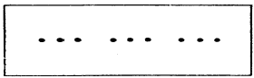
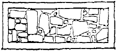
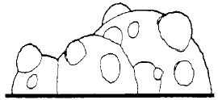
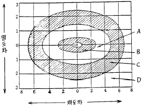
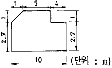
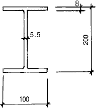

실내건축산업기사 (2002-08-11 기출문제)
1과목: 실내디자인론
1. 실내디자인의 목표로서 가장 적당한 것은?
- 인간생활공간의 쾌적성 추구이다.
- 실내공간을 아름답게 하는 것이다.
- 실내공간을 품위있게 꾸미는 것이다.
- 인간생활공간을 격조있고 사치스럽게 디자인하는 것이다.
(정답률: 87%)

2. 다음의 실내공간 중 성격이 다른 공간은?
- 유틸리티(utility)
- 다이닝앨코브(dining alcove)
- 배선실(pantry)
- 리빙룸(living room)
(정답률: 59%)
3. 디자인의 원리 중 조화(harmony)와 밀접한 관계가 있는 것은?
- 균형과 리듬
- 반복과 교체
- 반복과 대비
- 통일성과 다양성
(정답률: 44%)
4. 호텔의 중심기능으로 모든 동선체계의 시작이 되는 기능 공간은?
- 엘레베이터
- 연회장
- 로비
- 객실
(정답률: 94%)
5. 친사회적(prosocial)공간 배열이 기대되지 않는 곳은?
- 회의실
- 공항대합실
- 식당
- 커피숍
(정답률: 42%)
6. 바닥재의 종류 중 유지관리가 쉽고 선택의 범위가 넓은 재료는?
- 석재
- 목재
- 비닐류
- 바닥깔개
(정답률: 47%)
7. 다음 설명 중 옳지 않은 것은?
- 창호지창은 온화한 채광으로 실내분위기를 돋구어준다.
- 일광 조절장치에는 커튼, 블라인드, 루버 등이 있다.
- 유리블록을 실내에 사용할 경우 채광의 효과는 있으나 프라이버시가 결여된다.
- 에칭유리, 스테인드글라스는 반투과성 재료로 장식적 효과가 좋다.
(정답률: 55%)
8. 화장실 계획시 고려해야 할 사항으로 거리가 먼 것은?
- 동선계획을 고려한다.
- 사용인원에 맞추도록 한다.
- 설비와의 관계를 고려한다.
- 계단, 엘리베이터와 멀리한다.
(정답률: 79%)
9. 상업공간에서 두사람의 교차통행을 위한 통로의 폭은 어느정도가 적당한가?
- 750mm
- 900mm
- 1200mm
- 1800mm
(정답률: 46%)
10. 레스토랑 평면계획에 대한 설명 중 옳지 않은 것은?
- 카운터는 출입구 부분에 위치시키는 것이 좋다.
- 고객의 동선과 주방의 동선이 교차하지 않도록 한다.
- 요리의 출구와 식기의 회수동선은 분리하는 것이 바람직하다.
- 공간의 다양성을 위해 서비스 동선이 이루어지는 곳은 바닥의 고저차가 있는 것이 좋다.
(정답률: 87%)
11. 실내디자인의 기본적인 프로세스 과정의 순서로 옳은 것은?
- 설계나 계획 - 설계감리 - 기획 - 평가
- 기획 - 설계나 계획 - 설계감리 - 평가
- 평가 - 기획 - 설계나 계획 - 설계감리
- 기획 - 평가 - 설계나 계획 - 설계감리
(정답률: 82%)
12. 실내디자인 프로세스중 실제 프로젝트에서 요구되어지는 조건사항들을 정하고 이들의 실행 가능성 여부를 파악하는 단계는?
- 개요설계단계
- 조건설정단계
- 기본설계단계
- 실시설계단계
(정답률: 60%)
13. 실내디자인 프로젝트의 범주에 대한 설명으로 잘못된것은?
- 기존공간의 개보수(renovation)나 신축공간을 대상으로 한다.
- 신축공간의 경우 항상 건축물이 준공된 후 실내용도가 결정된다.
- 개보수의 경우 실측과 검사를 통해 실체를 명확히 파악해야 한다.
- 개보수의 경우 기존도면이 있더라도 새롭게 실측과 검사를 해야한다.
(정답률: 82%)
14. 좁은공간을 시각적으로 넓게 보이게 하는 방법에 속하지 않는 것은?
- 한정되고 좁은공간에 소규모의 가구를 놓으면 시각적으로 넓어 보인다.
- 밝고 따뜻한 색은 공간을 확장되어 보이게 하고 어둡고 찬 색은 공간을 축소시켜 보인다.
- 한쪽 벽면 전체에 거울을 부착시키면 공간이 확장되어 보인다.
- 가구의 높이를 되도록 낮추면 공간이 넓어 보인다.
(정답률: 57%)
15. 실내 벽면에 부착되는 구성재가 아닌 것은?
- 걸레받이
- 브라켓
- 코펜하겐리브
- 펜던트
(정답률: 71%)
16. 실내디자인 요소의 하나인 점에 관한 설명 중 옳지 않은 것은?
- 점이 많은 경우는 긴 선이나 면으로 발전한다.
- 두 점의 크기가 차이가 있으면 작은점에서 큰 점에 주의력이 흐른다.
- 점은 구심점이므로 면 또는 공간에 하나의 점이 놓여지면 주의력이 집중된다.
- 2개의 점 사이에는 눈에 보이지 않는 선(negative line)이 생기고 서로 당기는 힘 즉, 인장력이 생긴다.
(정답률: 82%)
17. 디자인의 요소 중 점에 대한 아래그림을 보고 옳게 설명한 것은?

- 집중효과가 있다.
- 선이나 형의 효과가 생긴다.
- 면으로 지각된다.
- 집합, 분리의 효과를 얻는다.
(정답률: 64%)
18. 실내디자인의 개념을 잘못 설명한 용어는?
- 순수예술
- 디자인활동
- 실행과정
- 전문과정
(정답률: 86%)
19. 다음 그림은 디자인의 원리 중 무엇을 설명하는 그림인가?

- 문양
- 질감
- 양감
- 변화
(정답률: 56%)
20. 다음 그림은 디자인의 원리 중 무엇을 설명하는 그림인가?

- 문양
- 질감
- 양감
- 변화
(정답률: 55%)
2과목: 색채 및 인간공학
21. 앉아 있을 때 가장 큰 힘이 작용하는 제어장치의 손잡이 위치는?
- 어깨의 높이
- 가슴의 높이
- 배꼽의 높이
- 팔꿈치 높이
(정답률: 53%)
22. 감법혼색에 대한 설명 중 잘못된 것은?
- 감법혼색의 3원색은 황(yellow), 청(cyan), 적자(magenta)이다.
- 감법혼색이란 주로 색료의 혼합을 의미한다.
- 3원색을 모두 동등량 혼합하면 백색(백색광)이 된다.
- 3원색의 비율에 따라 수많은 색을 만들 수 있다.
(정답률: 67%)
23. 소음의 허용치를 구하는 경우 관련이 없는 내용은?
- 소음도
- 청력 손실
- 음성 이해도에의 악영향
- 진동의 신체에 대한 영향
(정답률: 41%)
24. 슈브뢸의 색채조화 원리가 아닌 것은?
- 인접색의 조화
- 근접보색의 조화
- 등간격 2색의 조화
- 반대색의 조화
(정답률: 44%)
25. 병원의 대합실 색채조절에 있어서 명도와 채도는 다음 중 어떻게 하는 것이 가장 바람직한가?
- 명도 4전후, 채도 10
- 명도 6전후, 채도 7
- 명도 8전후, 채도 3
- 명도 10전후, 채도 0
(정답률: 42%)
26. 다음 중 동일 조건하에서 명시도가 가장 높은 배색은?
- 빨강 배경색에 파랑 글씨색
- 검정 배경색에 노랑 글씨색
- 흰 배경색에 노랑 글씨색
- 보라 배경색에 파랑 글씨색
(정답률: 83%)
27. 동작경제의 원칙(principles of motion economy)과 관련된 내용 중 틀린 것은?
- 중력의 이용
- 가속도의 사용
- 최단 동선의 확보
- 작업자의 습관 제거
(정답률: 18%)
28. 안근과 수정체의 협동에 의해 이루어지는 것으로 두눈이 같은 지점을 주시할 수 있게 하는 것은?
- 누가작용
- 복주작용
- 착각
- 관찰
(정답률: 39%)
29. 다음 색의 기능에 관한 설명 중 옳은 것은?
- 유목성은 글자나 기호 또는 그림글자(픽토그램)등을 알아보는 성질을 말한다.
- 시인성은 무의식적으로 있을 때 사람의 시선을 끄는 성질을 말한다.
- 가독성은 어떤 거리에서 색을 알아보기 쉬운 성질을 말한다.
- 유목성, 시인성, 가독성을 높이는데 공통적으로 중요한 것은 전경색(도형색)과 배경색의 명도차를 크게 하는 것이다.
(정답률: 41%)
30. 청각에 해당되지 않는 것은?
- 음의 밀도
- 음의 시간적 간격
- 음의 균일성
- 음의 높이
(정답률: 27%)
31. 먼셀의 색체계에서 3속성과 관계가 없는 것은?
- 색상
- 대비
- 명도
- 채도
(정답률: 82%)
32. 색의 중량감에 관한 설명 중 잘못된 것은?
- 명도가 낮은 것은 무거움을 느낀다.
- 명도 보다는 색상의 차이가 크게 좌우된다.
- 채도 보다는 명도의 차이가 크게 좌우된다.
- 명도가 높은 것은 가벼움을 느낀다.
(정답률: 75%)
33. 다음 색채가 수반하는 일반적 연상 중 잘못된 것은?
- 적색- 정열, 사랑, 혁명
- 청색- 희열, 즐거움, 신선
- 녹색- 청춘, 평화, 이상
- 노랑- 명쾌, 발랄, 희망
(정답률: 82%)
34. 인체의 피부면에 가장 넓게 분포되어 있는 감각은?
- 열각
- 통각
- 압각
- 냉각
(정답률: 83%)
35. 빛의 특성에 관한 설명 중 올바른 것은?
- 색으로도 느낄 수 있다.
- 파동성이 없다.
- 프리즘에 의해 둥근띠를 형성한다.
- 물체에 닿으면 모두 반사된다.
(정답률: 45%)
36. 다음 도표는 무운.스펜서의 먼셀 동색상면에 있어서의 조화와 부조화의 영역을 나타낸 것이다. 대비조화의 영역은?

- A
- B
- C
- D
(정답률: 29%)
37. 휘광을 없애기 위한 조치가 잘못된 것은?
- 광원을 시선에서 멀리 위치시킨다.
- 광원의 휘도를 줄이고 광원의 수를 늘린다.
- 산란광, 간접광 차양등을 사용한다.
- 휘광원주위를 어둡게하고 휘도비를 높인다.
(정답률: 60%)
38. 제반시스템을 인간의 측면에서 보아 피로가 적고 쓰기 쉬운, 그리고 오조작이 없는 효율이 높은 기계 기구를 설계하자는 것은?
- 인간공학 연구의 목적
- 생산관리 연구의 목적
- 동작분석 연구의 목적
- 환경공학 연구의 목적
(정답률: 70%)
39. 기계와 환경의 시스템이 맞지 않을 때 인간에게 어떠한 현상이 주로 일어나는가?
- 조건 반사적 현상
- 신체적 피로 현상
- 기계 계측의 변화현상
- 기계 고장의 현상
(정답률: 65%)
40. 사무용 책상을 설계할 때, 다음 치수 선정의 우선순위 중 중요도가 비교적 가장 적은 것은?
- 작업면의 높이
- 서랍의 깊이와 길이
- 무릎높이와 깊이
- 작업면의 폭과 길이
(정답률: 68%)
3과목: 건축재료
41. 폴리에스테르수지에 대한 설명 중 옳지 않은 것은?
- 알키드수지라 불리는 것은 포화 폴리에스테르를 말한다.
- 포화 폴리에스테르 수지는 거의 도료용으로 쓰인다.
- 불포화 폴리에스테르 수지는 유리섬유로 보강하여 건축재로 이용된다.
- 폴리에스테르 수지는 열가소성 수지이다.
(정답률: 34%)
42. 콘트리트에서 레이턴스(laitance)현상이란 무엇인가?
- 미경화콘크리트 중 시멘트풀과 골재가 분리되는 현상
- 미경화콘크리트가 정치(靜置)되었을때 윗면이 침하되는 성질
- 콘크리트 내부의 잉여수가 공기 등과 함께 위로 떠오르는 현상
- 콘크리트에서 수분과 함께 떠오른 미립물이 표면에 엷은 막으로 침적되는 현상
(정답률: 56%)
43. 목재의 방부제로 유용성 방부제는?
- 유성페인트
- PCP
- 오일스테인
- 수성페인트
(정답률: 71%)
44. 생석회에다 물을 가하여 만든 것으로 기경성 미장재료인 것은?
- 소석고
- 킨스시멘트
- 돌로마이트석회
- 소석회
(정답률: 45%)
45. 크롬산아연을 안료로 알키드수지를 전색제로 사용한 것으로 알루미늄이나 아연철판의 초벌용으로 가장 적합한 도료는?
- 광명단 도료
- 알루미늄 도료
- 방청 산화철 도료
- 징크로메이트 도료
(정답률: 39%)
46. 황동의 주성분은?
- 구리와 아연
- 구리와 니켈
- 구리와 알루미늄
- 구리와 철
(정답률: 80%)
47. 콘크리트에서 수화작용에 필요한 물의 양보다 더 많은 양의 물을 넣는 가장 큰 이유는?
- 흡수를 방지하고 수밀성을 증대하기 위해서
- 재료 분리를 방지하기 위해서
- 시공을 쉽게 하기 위해
- 콘크리트의 중성화를 막기 위해서
(정답률: 33%)
48. 일반건축물의 창유리로 사용되는 유리는?
- 소오다석회유리
- 칼리석회유리
- 칼리연유리
- 석영유리
(정답률: 58%)
49. 연강철선을 가로 세로로 대어 전기용접하여 정방형 또는 장방형으로 만들어 콘크리트 도로 바탕용 등에 처짐 및 균열에 대응하도록 만든 철물은?
- 익스펜디드 메탈
- 메탈라스
- 와이어메시
- 코너비드
(정답률: 60%)
50. 불완전 연소로 소성하여 만든 점토벽돌로 주로 치장용으로 사용되는 것은?
- 붉은벽돌
- 검정벽돌
- 내화벽돌
- 이형벽돌
(정답률: 23%)
51. 강관이나 주철관과 비교했을 때 플라스틱관의 특징이 아닌 것은?
- 중량이 가볍다.
- 유체저항이 적다.
- 시공이 복잡하다.
- 내열성이 부족하다.
(정답률: 78%)
52. 목재의 강도에 관한 설명이 잘못된 것은?
- 비중이 큰 목재가 강도도 크다
- 함수율이 클수록 강도가 크다
- 옹이가 많은 목재는 강도가 낮다
- 심재가 변재보다 강도가 크다.
(정답률: 69%)
53. 알루미늄 재료와 철재의 접촉면 사이에 수분이 있으면 알루미늄은 부식한다. 이것은 무슨 작용인가?
- 열분해 작용
- 전기분해 작용
- 산화 작용
- 기상 작용
(정답률: 50%)
54. 석재 성질에 관한 설명 중 옳지 않은 것은?
- 화강암은 압축강도가 크다.
- 수성암 계통은 일반적으로 내화성이 약하다.
- 응회암은 장식재로 적당하다.
- 대리석은 석회석이 변질된 것이다.
(정답률: 45%)
55. ALC 제품에 관한 설명 중 부적당한 것은?
- 오토클레이브에 증기양생하여 만든 기포콘크리트이다.
- 방음, 단열 특성이 우수하며 변형이나 균열이 적다.
- 경량이나 낮은 압축강도로 구조재로는 사용하기 어렵다.
- 팽창.수축율이 큰 것이 특징이다.
(정답률: 37%)
56. 회반죽(소석회) 바름시 사용하는 해초풀은 채취후 1∼2년 경과된 것이 좋은 이유는?
- 점도(풀기)가 높기 때문이다.
- 알칼리도가 높기 때문이다.
- 색상이 우수하기 때문이다.
- 염분제거가 쉽기 때문이다.
(정답률: 63%)
57. 석고보드의 일반적인 특징에 대한 설명으로 적합치 못한 것은?
- 수축률이 크고 탄성이 적다.
- 방화성능 및 보온성이 우수하다.
- 저렴하고 방습성이 우수하다.
- 설치후 도료로 도포할 수 있다.
(정답률: 28%)
58. 과소품(過燒品)벽돌의 특징에 해당되지 않는 항목은?
- 색채가 고르지 못하다.
- 형태가 고르지 못하다
- 균열이 많이 생긴다.
- 강도가 약하다.
(정답률: 25%)
59. 목재를 소편(小片. chip)으로 만들어 유기질 접착제를 첨가시켜 열압 제판한 판(板)제품은?
- 파이버 보오드(fiber board)
- 파티클 보오드(particle board)
- 플로링 보오드(flooring board)
- 파키트리 보오드(parquetry board)
(정답률: 73%)
60. 접착제 중 급경성으로 내화학성이나 접착력이 커서, 금속, 석재, 도자기, 유리, 콘크리트 등의 접착에 사용하는 것은?
- 아크릴수지
- 페놀수지
- 에폭시수지
- 멜라민수지
(정답률: 58%)
4과목: 건축일반
61. 목조반자틀 구조에 쓰이지 않는 것은?
- 달대
- 달대받이
- 졸대
- 반자틀
(정답률: 49%)
62. 철망 모르타르로서 바름두께가 얼마 이상일 경우 건축법에서 방화구조에 해당하는가?
- 1.0㎝
- 2.0㎝
- 2.7㎝
- 3.0㎝
(정답률: 65%)
63. 20세기 중반의 실내장식가 모리스 라피더스(Morris Lapi-dus)에 관한 설명 중 옳은 것은?
- 지중해 연안에 위치한 일련의 휴양지 호텔장식을 하였다.
- 미국의 중류가정의 실내장식을 함으로서 실내장식의 개념을 대중화시키는데 기여하였다.
- 현대적인 개념의 구성주의를 주된 모티브로 채택하였다.
- 모든 유행양식을 매우 독창적이면서 동시에 어떤 양식으로도 분류되지 않는 양식으로 혼합하였다.
(정답률: 36%)
64. 바우하우스에 관한 설명 중 옳지 않은 것은?
- 과거양식을 종합적으로 연구하였다.
- 그로피우스에 의해 설립되었다.
- 예술과 공업생산을 결합하여 모든 예술의 통합화를 추구하였다.
- 공작교육과 형태교육을 병용하였다.
(정답률: 54%)
65. 그리스 장식문양에 관한 설명 가운데 틀린 것은?
- 건물과 조각을 별개로 구성하였다.
- 아칸더스식물, 로젯트 등 여러가지 문양을 사용하였다
- 초기에는 이집트, 서아시아 등에서 영향을 받았다.
- 정교한 비례와 아름다운 선을 사용하였다.
(정답률: 25%)
66. 소방시설에서 소방에 필요한 설비가 아닌 것은 어느 것인가?
- 소화설비
- 급수설비
- 경보설비
- 피난설비
(정답률: 43%)
67. 그림과 같은 거실 단면의 반자 높이는 얼마로 보는가?

- 2.7m
- 3.25m
- 3.54m
- 3.7m
(정답률: 18%)
68. 표준형 벽돌 2.0B 벽두께 치수로 옳은 것은?
- 390mm
- 420mm
- 430mm
- 450mm
(정답률: 77%)
69. 환기 및 채광을 위하여 거실에 설치하는 창문 등의 면적은 그 거실의 바닥면적의 얼마 이상이어야 하는가?
- 환기 : 1/10, 채광 : 1/10
- 환기 : 1/10, 채광 : 1/20
- 환기 : 1/20, 채광 : 1/10
- 환기 : 1/20, 채광 : 1/20
(정답률: 48%)
70. 배연설비에 관한 기준 중 부적합한 것은?
- 6층 이상의 건축물로서 문화 및 집회시설, 판매 및 영업시설, 의료시설에 쓰이는 거실에는 모두 배연설비를 설치하여야 한다.
- 방화구획이 설치된 경우에는 그 구획마다 1개소 이상의 배연구를 바닥에서 0.5m 이상의 높이에 설치하여야 한다.
- 배연구의 유효면적은 1m2 이상으로서 그 면적의 합계가 당해 건축물 바닥면적의 1/100 이상이여야 한다.
- 배연구는 연기감지기 또는 열감지기에 의하여 자동으로 열 수 있는 구조로 하되, 손으로도 열고 닫을 수 있도록 하여야 한다.
(정답률: 40%)
71. 철근콘크리트조의 철근 피복에 대한 기술에서 틀린 것은?
- 철근콘크리트 보의 피복두께는 주근의 표면과 이를 피복하는 콘크리트 표면까지의 최단거리이다.
- 피복두께는 내화ㆍ내구성 및 부착력을 고려하여 정하는 것이다.
- 동일한 부재의 단면에서 피복두께가 클수록 구조적으로 불리하다.
- 콘크리트의 중성화에 따른 철근의 부식을 방지한다.
(정답률: 26%)
72. 바닥면적이 1,000m2인 관람석에 설치하는 출구의 유효너비의 합계로서 건축법상 최소치는?
- 3.0 m
- 3.6 m
- 6.0 m
- 7.2 m
(정답률: 49%)
73. 20세기 초기건축으로 프랑크 로이드 라이트가 설계한 작품은?
- 사보아 저택
- 튜겐트 저택
- 벽돌조 전원주택
- 카푸만 저택
(정답률: 52%)
74. 철골조에서 그림과 같은 H형강의 올바른 표기법은?

- H - 100 × 200 × 5.5 × 8
- H - 100 × 200 × 8 × 5.5
- H - 200 × 100 × 5.5 × 8
- H - 200 × 100 × 8 × 5.5
(정답률: 63%)
75. 고대 그리스와 로마시대에 있어 상류계층들을 위한 극장에서 사용되었던 옥좌(의자)의 재료로서 옳은 것은?
- 흑단나무
- 참나무
- 테라코타
- 대리석
(정답률: 47%)
76. 스프링클러설비를 설치하여야 할 소방 대상물 중 아파트의 경우에는 몇층 이상에 설치해야 하는가?
- 11층
- 13층
- 15층
- 16층
(정답률: 27%)
77. 두께 2㎝ 널을 못으로 박을 때 못의 적당한 길이는?
- 3㎝
- 5㎝
- 7.5㎝
- 9㎝
(정답률: 51%)
78. 시멘트블록구조에 관한 기술 중 틀린 것은?
- 내력벽의 중심선으로 둘러싸인 부분의 면적은 80m2 이하로 한다.
- 보강 콘크리트블록조는 3층 건물도 시공이 가능하다.
- 보강 콘크리트블록조의 내력벽 벽량은 15㎝/m2 이상으로 한다.
- 보강 콘크리트블록조의 내력벽 두께는 20㎝ 이상으로 한다.
(정답률: 34%)
79. 철근콘크리트 단순보가 하중으로 인하여 단부 부근의 하부에 균열이 발생하는 경우가 있다. 이 균열을 방지하는 가장 유효한 방법은?
- 인장측의 철근량을 증가시킨다.
- 인장측의 철근을 이형철근으로 배근한다.
- 압축측의 철근량을 증가시킨다.
- 스터럽(늑근)을 증가시킨다.
(정답률: 42%)
80. 벽돌벽에 장식적으로 여러 모양으로 구멍을 내어 쌓는 것을 무엇이라 하는가?
- 무늬쌓기
- 영롱쌓기
- 불식쌓기
- 공간쌓기
(정답률: 53%)